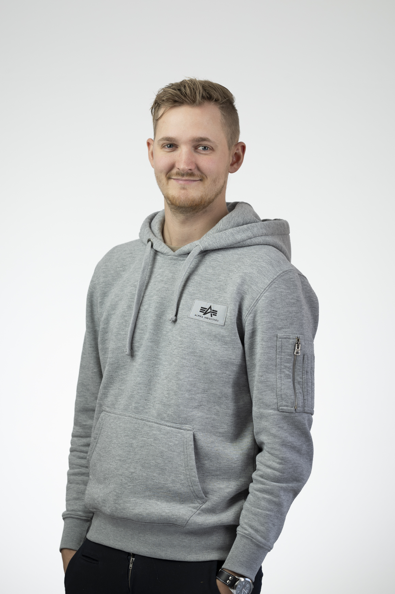

|  |
Rickard Bohman |
Jag kommer från en stad som heter Borlänge som ligger i centrala Dalarna.
Där jag då jobbade som Elektriker på Granitor Electro och har gjort det sedan 2016 då jag tog studenten från Erikslundsgymnasiet.
I Borlänge så umgicks jag mycket med vänner och familj samt så spelade jag mycket golf då jag både var med i och var tränare för en juniorträningsgrupp. Men mer om det här!
Sedan så flyttade jag och min sambo till Göteborg Februari 2022 , då jag böt arbetsplats inom samma företag till servie här i Göteborg istället för Borlänge.
Sedan jag flyttade till Göteborg så har jag hunnit jobbat på min nya arbetsplats i ca 6 månader innan jag kände att det var dags för en förärndring.
Då jag fann ett intresse för kodning samt programmering i somras så började jag att plugga själv hemma genom att köpa några kurser online via en hemsida som heter Udemy.
Jag köpte 2st kurser som jag började studera på kvällarna efter jag kommit hem från jobbet.
Jag köpte då dessa kurser: